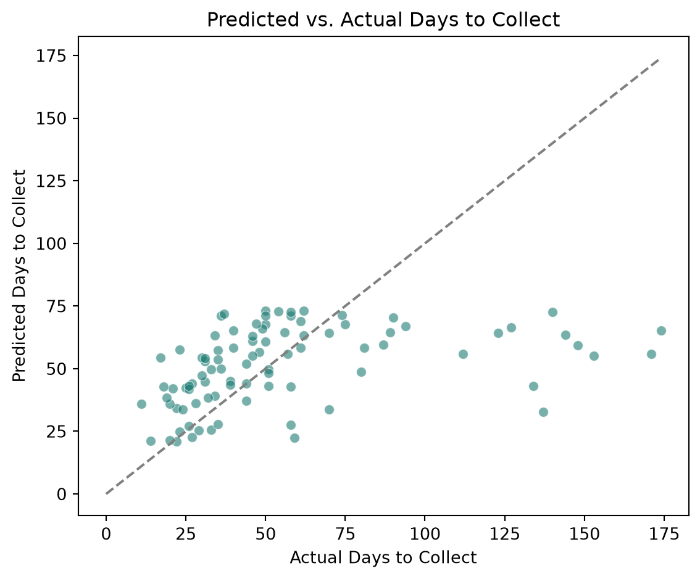
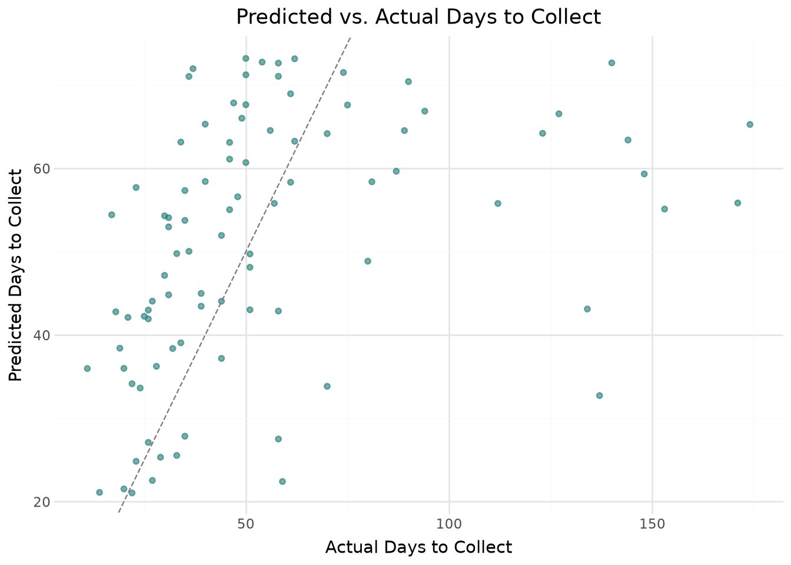

By the end of this chapter, you should be able to:
Explain the difference between regression and classification, and identify which fits a given accounting question
Split data into training and test sets, and explain why this matters for evaluating a model honestly
Fit and interpret a linear regression model for a continuous accounting outcome
Fit and interpret a logistic regression model for a binary accounting outcome (financial distress)
Evaluate regression models with MAE, RMSE, and R², and classification models with accuracy, precision, recall, F1, and ROC-AUC
Recognize the “accuracy trap” that arises with imbalanced outcomes, and avoid over-trusting a single metric
Perform all of the above using both pandas and polars, and visualize results with both seaborn and plotnine
13.1 From Descriptive to Predictive Analytics
Recall the four types of analytics from Chapter 1: descriptive, diagnostic, predictive, and prescriptive. Every chapter so far has lived mostly in the first two — summarizing what happened (Chapter 5), and investigating why (Chapters 8-11). This chapter takes the first step into predictive analytics: using historical data to estimate an outcome we don’t yet know.
We’ll build two models on two different accounting questions:
Regression — predicting a continuous outcome: how many days will it take to collect a given invoice? (using sales_transactions.csv from Chapter 10)
Classification — predicting a binary outcome: is this company financially distressed? (using a new dataset, company_financial_distress.csv)
Recall from Chapter 10 that restricting to paid invoices introduces survivorship bias when comparing DSO across recent periods. The same caution applies here: this model is trained only on invoices that have already been collected, which may not perfectly represent the invoices still outstanding. Keep this in mind when interpreting the model’s real-world usefulness later in this chapter.
13.2.2 Train/Test Split
Before fitting any model, we set aside a portion of the data the model never sees during training, so we can honestly evaluate how well it generalizes to new invoices.
from sklearn.model_selection import train_test_splitfeatures_reg = ["log_amount", "payment_terms_days", "quarter", "ship_lag_days"]X = paid_pd[features_reg]y = paid_pd["days_to_collect"]X_train, X_test, y_train, y_test = train_test_split(X, y, test_size=0.25, random_state=42)print(f"Training set: {len(X_train)} invoices, Test set: {len(X_test)} invoices")
Training set: 270 invoices, Test set: 90 invoices
ImportantWhy Not Just Use All the Data?
If we fit a model on all 360 invoices and evaluated it on those same 360 invoices, we’d be measuring how well the model memorized this specific data, not how well it will perform on the next new invoice. Setting aside a test set the model never sees during training is the standard way to get an honest estimate of real-world performance.
Figure 13.1: Factors Affecting Days to Collect (DTC)
A few coefficients are worth reading carefully:
payment_terms_days (+0.97): each additional day of payment terms offered is associated with almost exactly one additional day to collect — customers largely pay according to the terms they’re given, which is reassuring and expected.
quarter (-6.2): later quarters are associated with faster collection. This should look familiar — it’s the same declining-DSO pattern from Chapter 10, which we already know is partly a survivorship bias artifact from measuring near a fixed cutoff date, not necessarily a genuine operational improvement.
log_amount (-3.3): larger invoices tend to be collected slightly faster, plausibly because larger balances get more collections attention.
Figure 13.1 presents the importance of coefficients.
plt.figure(figsize=(6, 5))sns.scatterplot(data=pred_df, x="actual", y="predicted", alpha=0.6, color="#1c7c73")lims = [0, max(pred_df["actual"].max(), pred_df["predicted"].max())]plt.plot(lims, lims, "--", color="gray")plt.title("Predicted vs. Actual Days to Collect")plt.xlabel("Actual Days to Collect")plt.ylabel("Predicted Days to Collect")plt.tight_layout()plt.show()

from plotnine import*( ggplot(pred_df, aes(x="actual", y="predicted"))+ geom_point(alpha=0.6, color="#1c7c73")+ geom_abline(slope=1, intercept=0, linetype="dashed", color="gray")+ labs(title="Predicted vs. Actual Days to Collect", x="Actual Days to Collect", y="Predicted Days to Collect")+ theme_minimal())

ImportantAn Honest Look at a Weak Model
An R² of roughly 0.14 means this model explains only about 14% of the variation in how long invoices take to collect — the rest is essentially unmodeled from these four features alone. The scatter plot makes this concrete: predictions cluster in a fairly narrow band regardless of the actual outcome, which swings far more widely. This is a realistic and important result, not a failure of the chapter. Not every accounting prediction problem yields a strong model, and reporting a weak R² honestly is far more useful than cherry-picking features until a chart looks better. Collection timing likely depends on factors we haven’t captured here at all — a specific customer’s cash position, an ongoing dispute, or a change in the customer’s own collections priorities.
Our second dataset, company_financial_distress.csv, contains financial ratios for 320 companies along with a binary outcome: whether each company experienced financial distress in the following year. The ratios mirror those used in classic bankruptcy prediction research (e.g., the Altman Z-score): liquidity, leverage, profitability, and efficiency measures.
Only about 17% of companies in this dataset are labeled distressed — an imbalance worth keeping in mind, since it will matter a great deal when we evaluate the model shortly.
The direction of every difference matches financial theory: distressed companies show a lower current ratio (less liquidity), higher debt-to-equity (more leverage), lower ROA (less profitable), and lower interest coverage (less cushion to service debt).
Train distress rate: 0.171 Test distress rate: 0.162
Notice stratify=yc — this ensures the train and test sets both preserve the same 17% distress rate, rather than risking a split where, by chance, the test set ends up with very few (or zero) distressed companies.
from sklearn.preprocessing import StandardScalerscaler = StandardScaler()Xc_train_scaled = scaler.fit_transform(Xc_train)Xc_test_scaled = scaler.transform(Xc_test)
TipWhy Standardize for Logistic Regression?
Our features span very different scales — debt_to_equity typically ranges from 0 to 4, while interest_coverage ranges from -5 to 30. Standardizing (subtracting the mean, dividing by the standard deviation) puts every feature on a comparable scale, which makes the resulting coefficients directly comparable to each other — a larger coefficient genuinely means a stronger effect, not just a feature with bigger raw numbers.
debt_to_equity has the largest positive coefficient (higher leverage → higher distress risk), while current_ratio and roa show the largest negative coefficients (more liquidity and profitability → lower risk) — all consistent with the differences we saw in the group comparison above. Figure 13.2 presents the importance of coefficients.
88.8% accuracy sounds impressive — until you notice that simply predicting “no distress” for every single company would already achieve 83.75% accuracy, since only about 16% of companies in the test set are actually distressed. Our model’s real improvement over that naive baseline is much smaller than the headline accuracy number suggests.
This is exactly why precision, recall, and ROC-AUC matter more than accuracy alone whenever the outcome you’re predicting is rare — which describes most consequential accounting prediction problems (fraud, bankruptcy, default). A model can post a very high accuracy score while still being nearly useless at its actual job: identifying the rare cases that matter.
Our recall of roughly 0.46 means the model correctly identifies fewer than half of the companies that actually become distressed — a real limitation worth stating plainly rather than glossing over.
13.3.5 Confusion Matrix and ROC Curve
cm = confusion_matrix(yc_test, yc_pred)cm_df = pd.DataFrame( cm, index=["Actual: No Distress", "Actual: Distress"], columns=["Pred: No Distress", "Pred: Distress"],)cm_df
A ROC-AUC of 0.84 means the model does meaningfully better than random guessing at ranking companies by risk (an AUC of 0.5 would be no better than a coin flip), even though its recall at the default 50% probability threshold is modest. This is a useful reminder that a model’s ranking ability and its performance at any one specific threshold are related but distinct questions — a point we return to in the exercises.
13.4 Chapter Summary
Predictive analytics uses historical data to estimate an outcome that hasn’t happened yet, building on the descriptive and diagnostic foundations from earlier chapters.
Regression predicts a continuous outcome (days to collect); classification predicts a categorical outcome (financial distress) — the right choice depends entirely on the nature of the outcome you’re trying to predict.
Splitting data into training and test sets is essential for honestly evaluating whether a model generalizes, rather than just memorizing the data it was fit on.
A weak regression result (R² of 0.14) is a legitimate and informative finding — not every prediction problem yields a strong model, and honestly reporting a weak fit is more valuable than manufacturing an artificially strong one.
Standardizing features before logistic regression puts coefficients on a comparable scale, making it possible to compare which factors matter most.
With imbalanced outcomes (here, ~17% distress), accuracy alone can be deeply misleading — a naive “always predict the majority class” baseline can already achieve high accuracy, so precision, recall, F1, and ROC-AUC are essential companions to any accuracy figure.
13.5 Discussion Questions
The regression model’s R² was only 0.14. If you were presenting this result to a manager who wanted a “good” model, how would you explain why this result is still useful, rather than a failure?
Our classification model’s recall was about 0.46 — it misses more than half of truly distressed companies. If you were designing a real early-warning system, would you rather have higher recall (catch more distressed companies, at the cost of more false alarms) or higher precision (fewer false alarms, but miss more real cases)? What accounting or business context would change your answer?
Explain, in your own words, why a model can have high accuracy but still be practically useless, using the baseline accuracy comparison from this chapter as your example.
13.6 Exercises
Add quarter as a categorical (one-hot encoded) feature instead of a numeric one in the regression model. Does R² improve, and does the interpretation of the quarter effect change?
Refit the logistic regression model using only four features of your choice (rather than all eight). How much do accuracy, recall, and ROC-AUC change compared to the full model?
The default classification threshold is 50% predicted probability. Using clf_model.predict_proba(), manually apply a lower threshold (e.g., 30%) to classify companies as distressed, and recompute precision and recall. How do they change, and why?
Using paid_pd, engineer one new feature not used in this chapter (for example, a flag for whether the customer is one of the four high-risk customers identified in Chapter 10) and add it to the regression model. Does it improve R² meaningfully?